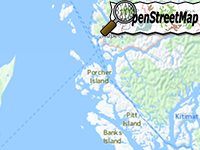

Example of how to make a request to Open Street Map Overpass API and handle the response.
Usage instructions:
Add this script to map GameObject.
Add this script to map GameObject.
OSMRequestExample.cs
/* INFINITY CODE 2013-2016 */
/* http://www.infinity-code.com */
using System;
using System.Collections.Generic;
using System.Linq;
using UnityEngine;
namespace InfinityCode.OnlineMapsExamples
{
[AddComponentMenu("Infinity Code/Online Maps/Examples (API Usage)/OSMRequestExample")]
public class OSMRequestExample : MonoBehaviour
{
private void Start()
{
// Get map corners
Vector2 topLeft = OnlineMaps.instance.topLeftPosition;
Vector2 bottomRight = OnlineMaps.instance.bottomRightPosition;
// Create OSM Overpass request where highway is primary or residential
string requestData = String.Format("node({0},{1},{2},{3});way(bn)[{4}];(._;>;);out;",
bottomRight.y, topLeft.x, topLeft.y, bottomRight.x, "'highway'~'primary|residential'");
// Send request and subscribe to complete event
OnlineMapsOSMAPIQuery.Find(requestData).OnComplete += OnComplete;
}
/// This event called when the request is completed.
private void OnComplete(string response)
{
List<OnlineMapsOSMNode> nodes;
List<OnlineMapsOSMWay> ways;
List<OnlineMapsOSMRelation> relations;
// Get nodes, ways and relations from response
OnlineMapsOSMAPIQuery.ParseOSMResponse(response, out nodes, out ways, out relations);
foreach (OnlineMapsOSMWay way in ways)
{
// Log highway type
Debug.Log(way.tags.FirstOrDefault(t => t.key == "highway").value);
}
}
}
}